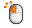
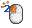
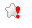

- :
- :
Puedes utilizar como modificadores [ ALT, CRTL, SHIFT, META ] y como teclas, cualquiera de [ A-Z ] o [ 0-9 ] o alguna de las teclas especiales
TECLAS ESPECIALES:
- ESC, TAB, SPACE, RETURN, ENTER, BACKSPACE
- SCROLL, SCROLL_LOCK, CAPS, CAPS_LOCK, NUM, NUM_LOCK
- PAUSE, BREAK, INSERT, HOME, DELETE, END, PAGE_UP, PAGE_DOWN
- LEFT, UP, RIGHT, DOWN
- F1, F2, F3, F4, F5, F6, F7, F8, F9, F10, F11, F12
Asegúrate de guardar los cambios tras realizar modificaciones. Si cambias los atajos de teclado, tendrás que recargar las páginas abiertas para que funcionen, o bien reiniciar el navegador.
- El esquema de uso no puede ser más simple:
-  Un click simple abrirá un Popup o pestaña donde podrás Agregar o Modificar un marcador, y que se cerrará automáticamente al guardar
-  Un doble click en el icono de la extensión abrirá una nueva pestaña con tu cuenta Google Bookmarks, donde podrás Gestionar tus marcadores
- Con la Guía visual desactivada, siempre se mostrará este icono:
- Icono fijo, estés conectados o no, exista el marcador o no
- En cambio, si utilizamos la Guía visual, verás en tu barra de marcadores estos iconos:
-  No estás conectado a tu cuenta de Google Bookmarks Click para Autentificarte
- La URL no se encuentra en marcadores Click para Agregarla
- La URL se encuentra en marcadores, sin etiquetas Click para Editarla
- La URL se encuentra en marcadores, con dos etiquetas Click para Editarla
- Si además activas las animaciones, el icono cambiará para llamar tu atención cuando haya cambios:
-
Desarrollada por MarcosBL.
Dedicada a Lola por más motivos de los que caben en este pie de página.